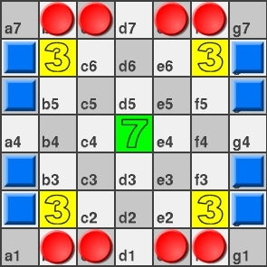

You will find many references to the original LOA game on the web.
For the Programmer Of The Month LOAPS contest
only the rules of the game descibed on this page
will apply. The piece movement rules will be the same as you find
on the other sites - but we play on a different sized board with fewer
pieces and a different starting position. In addition there
are several "scoring methods" not present in the original which
may change the primary connectivity goal of the original.
I shall state all the LOAPS rules below with my usual clarity.
In addition to the "game rules", you will find some
"program restrictions" below - most notably the time restriction
of 60 seconds per program TOTAL for all game moves. This is
intended to behave something like a "chess clock" for computers.
THE GAME
The board is a 7x7 grid. Throughout the rules discussion the
squares of the board will be marked in standard chess notation.
Each side begins with 8 pieces - placed as shown at the
beginning of the game:

A "move" consists of changing the position of a single
piece belonging to the mover according to the movement rules below.
The "RED" player moves first and the "BLUE" player second.
For purposes of this description I'll try to refer to the two
sides as "PLAYER 1" and "PLAYER 2" but may revert to "RED" and
"BLUE" if it seems clearer.
MOVEMENT OF PIECES
Pieces may move horizontally, vertically, or diagonally.
A piece moves exactly as many spaces as
there are pieces (both yours and those of your opponent) on the line
on which it is moving.
A piece may move over a friendly piece, but may not move over
an opponent's piece.
A piece may land on an opponent's piece,
resulting in capture and removal of the opponent's piece from the board.
A piece may not land on one of your own pieces when moving.
It is not permitted to pass - a piece must be moved on each turn.
A piece may not move off the board - no "wrap-around" is permitted.
Piece movement is the same as in the original "Lines Of Action" game. For some movement examples, I refer you to
the LOA Wikipedia Article which has some cogent examples, albeit on an 8x8 board.
Dave Dyer has also implemented a LOAPS player at
http://www.boardspace.net/ -
the best way to get a feel for the movement is to play a game or two.
The "special" point-scoring green and yellow squares have no effect
on the movement of the pieces.
PLAY OF THE GAME
Players alternate moves, beginning with the player with pieces
on the top and bottom rows - the "RED" player in the
diagrams. This player will be known as "PLAYER 1".
A move consists of moving a single piece from its current position
to a position consistent with the movement rules above
and the constraints discussed in the programming section.
Play continues until one of the following conditions is met:
| One of the two players achieves a board position where ALL
of his pieces are "connected". Two pieces are "connected"
if they are adjacent either horizontally, vertically, or
diagonally. Note that a single piece is considered "connected".
| | Both players have made 50 moves.
| | One of the players makes an illegal move or generates output
which is not a legal move.
| | One of the players exceeds the 60 second time
limit measured cumulatively over ALL moves thus far.
|
WINNING LOAPS
A "match" between two programs will consist of two games, with
each program having an opportunity to go first.
Two match-points are awarded for each game win (as determined by the
number of accumulated game-points) regardless of victory margin.
If two programs accumulate the same number of game-points at the
conclusion of the game each entry will receive one match-point.
If the fifty move limit is reached before either player achieves
a connection, the game is declared a draw regardless of the game-score
and each entry will receive one match-point.
A match consists of two games, with each entry having a chance to go first.
Thus a total of four match-points are awarded for each match and the margins
of victory in the games do not factor into determining the match winner.
If a program is disqualified (for an illegal move, timeout, etc.) then its
opponent will be declared the winner of that game. Game-points scored over the
course of that game are irrelevent.
It is possible to score 12 points for a connection (ending the game)
and still have fewer points than your opponent ... in this case you will
lose the game even though you made the final move.
At the conclusion of the LOAPS POTM, I will run a series of matches
where each program has the opportunity to play against each other program.
For example, if there are 25 eligible entries, each program will play
24 matches (48 games).
At the conclusion of the final runs, the program accumulating the most
match-points will win the POTM.
Note that it does not matter by how much you won any of the games.
A 1-0 game win is just as good as a 50-0 game win.
In the event that two or more programs accumulate the highest number of
match-points, the winner will be determined by examining the results of
head-to-head play to determine a winner among those that have tied.
If there is no clear winner after examining the results of these
top finishers in head-to-head play (because the matches resulted in
ties) the POTM-MASTER will figure out what to do next at that time.
Jan 13:
Resolution of ties at this point is defined in this forum link.
WAYS TO SCORE POINTS
| 12 |
You make a move that causes all your pieces
to be "connected". You score 12 and the game is over.
| | 12 |
Your opponent captures one of your pieces and leaves your
remaining pieces in a connected state (or leaves you with
a single piece). The game is over and you
score 12 points unless your opponent's
move resulted in a simultaneous connected position
for your opponent (see below).
|
| | 1 |
If you "capture" an opponent's piece by
landing on it you score a single point.
If the move results in a connected state for either player,
points for the connection are awarded in addition to this point.
If the capture takes place on a bonus square, points for the
bonus are awarded in addition to this point.
| | 7 |
If you land on the center square (d4) (green) you score seven points.
You and your opponent may land on this square multiple times and will
be awarded bonus points for each landing..
| | 3 |
If you land on one of the four corner bonus squares
(b2,b6,f2,f6)
(yellow) you score three points.
You and your opponent may land on this square multiple times and will
be awarded bonus points for each landing..
|
| | WIN |
If your opponent's sys+user game clock exceeds
60 seconds the game is over and you win the game by default.
| | WIN |
If your opponent makes an illegal move the game is
over and you win the game by default.
| | WIN |
If your opponent cannot move they will either
output an illegal move or time out (or perhaps concede!).
In any case, you have "pinned" your opponent.
You win the game by default.
|
| | DRAW |
If each player has made 50 moves and the game is not yet over
according to the above criteria, the game is declared a draw
regardless of the points accumulated during the game.
|
It is possible to make a capture move which simultaneously removes
your opponent's next to last piece and connects all your pieces, or
results in simultaneous connectivity for both sides. In this
case, you will be awarded 12 points for the connection and
one point for the capture - your opponent will
receive zero points. In other words, a connectivity bonus for the mover only.
There are no cases where BOTH players will be awarded 12 points
for connectivity.
THE INPUT FILE
will be provided as a full pathname argument to your executable, as in:
my_entry /tmp/inputfile
Line one will contain two numbers. The first is
either a "1" or a "2" indicating
whether you are the first player or the second player in this game and
a second number contains the upcoming move number. The upcoming move
number will be "1" at the beginning of the game and "50" when you
have only a last move remaining.
The second line will contain three numbers: The first number will
be "1" indicating this line will provide the current score and time
remaining for player "1". The second number on the line will be the
current score (initialized with "0") of player one. The third number
on the line will be the total REMAINING time for player one expressed
as a floating point number (for example 23.4 or 0.22). This will be
initialized with 60.0 indicating you have 60 seconds to work with.
The third line of the input file will be similar information for
player number two.
The next seven lines of the input file will contain the current
board position expressed as an ASCII map of the current board as if
being viewed. Notation on this map will be as follows:
"1" for each of player one's pieces;
"2" for each of player two's pieces;
"." for all other squares.
The yellow and green bonus squares will not be marked
in any particular way ... they will contain either a "1" or a "2" if
there is a piece on them, or "." if there is no piece on them.
Your program is responsible for remembering their five locations.
Some sample input files for the beginning and mid-game follow:
1 1
1 0 60.0
2 0 60.0
.11.11.
2.....2
2.....2
.......
2.....2
2.....2
.11.11.
| 1 10
1 4 5.34
2 5 9.49
.11....
2....1.
2.2.2..
..1...1
......2
22.....
.11....
| 2 28
1 13 8.91
2 7 40.7
.1..11.
2....2.
.......
...1.1.
2.....2
......2
.1..1..
| | The starting position as presented to the first player
| Ready for the 10th move by player one.
Two of the 3-point bonus squares have pieces on them.
| Ready for the 28th move by
player two. Player one has 13 points and has 8.91 seconds remaining.
Player two has 7 points and has 40.7 seconds remaining.
|
Your program should never be presented with a board that already contains
a winning position for either player.
OUTPUT OF YOUR ENTRY
Important: The ONLY output of your program is a single line containing the
starting position and ending position of the piece you chose to move
separated by white space.
Output the starting square in chess notation (b4 for example) and the
ending position (c3 for example) on a single line separated by white space.
Positions range from a1 through g7 as in the diagram.
There must be one of your pieces on the starting square and the
move must be a valid move according to the rules of LOAPS.
LOAPS PROGRAMMING RESTRICTIONS
You may use temporary files IN THE LOCAL DIRECTORY to store
information about the current game. If the file you create is
"too big" you will hear from the POTM-MASTER. If you have to
ask, then it is too big.
You may NOT store information about previous games against
the same opponent or other opponents. Each game is intended to
be completely independent of all other games.
Cooperation between opposing entries is strictly forbidden.
Any effort to identify or recognize your opponent and take
action based on that identity will result in banning from the
POTM and will earn the wrath of your fellow competitors.
Note that recognition and response to "strategies" is no problem -
this rule is intended solely to prevent cheating or teaming
of entries to defeat the intent of the contest.
Incorporating a "book" of openings, endgame, or mid-game
positions is permitted. However, in order to discourage the
pre-storing large numbers of positions, I will impose
a limit of 500,000 bytes on the executable.
COMMON RULES FOR POTM PROBLEMS
WINNING
Entries completing system test will be eligible for the final runs.
One entry per forum login
Multiple submissions of the same algorithm by the same person
or team will NOT be tolerated - please don't do this - it will be
obvious in the end and only cause pain for the other participants
Your official entry must be submitted for system test by the
deadline (23:59 Eastern time on the deadline date) using the sandbox tools
in order to participate in the finals.
Specific winning criteria will vary for each POTM and should be
clear from the above sections. If there are questions, use the forums please.
Personal info, Consolation Awards and Other Fun Stuff
Your email will never be made public and will not be shared
with anyone. To communicate, use the "private message" capabilities
in the forums.
Your full name (provided for the sandbox) will not be revealed
unless you happen to win - in which case it will appear on the trophy
as you are announced with pride as the winner. Of course, I will have
no way of knowing if it is your real name.
Your code will be publicly available via the website (if you are worthy)
and the top finishers are usually given an opportunity to make their
code "pretty". All entries should be considered as public domain.
The POTM is for fun. In that spirit, there are generally
awards for things like best program name and the like ...
basically anything that I feel like at the end of a contest.
Participants are also encouraged to provide an exposition
on their algorithm after the deadline passes ... these responses are
often the most fun to read and offer insights into the foibles and
quirks of the participants.
Running The Tests - the POTM-MASTER's job
I will subject all entries to a "system test" to qualify them
for the actual event - these are run hourly via cron (in general).
Scores on the system test problem may (or may not) be public - this
will vary by POTM at my discretion.
System test results are sent to the participant via email including
whatever might be of use for debugging purposes.
If asked nicely (via private message in the forums) it may be
possible to make a debugging run and supply the output, but in general
all debugging should be done on YOUR machine.
Programming Stuff
Rules above for specific POTM contests will take precedence over
these generic rules if there is a conflict.
Input will (most frequently) be provided as a full path argument
to your entry
my_entry /tmp/inputfile
Input file format will be explicitly defined for each POTM problem.
Your POTM problem output (with no extra output) goes to stdout
Explicit required output format will be defined for each POTM problem.
Nothing should be written to stderr
Nov 10: You may create a file in the local directory
named "DEBUG". The contents of this file will be appended to the mail you
receive after a system test. The intent is to provide some help for finding
bugs since stdout or stderr should not be used for that purpose.
You may "save" information in small temp files in
the local directory according to the rules of each individual problem.
There will be a per execution time limit (60 sec. sys+user time
as measured by /usr/bin/time unless otherwise stated).
Entries that exceed the time limit will receive a default score.
A signal (9) is sent to the program by the host when the time limit is exceeded.
any attempt to do anything whatever outside of your personal
run directory will be cause for disqualification and banning.
C and C++ programs will be compiled with only the math library
added to the standard libraries and no optimization.
Assember language optimizations are not permitted.
Non C/C++ entries must contain a first line beginning with "#!" as
specified in the sandbox instructions.
|